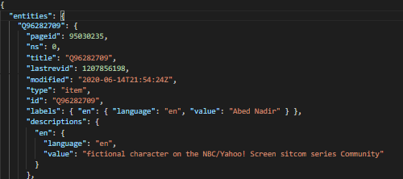
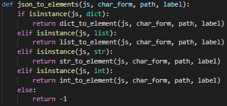
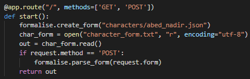
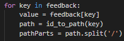
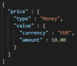
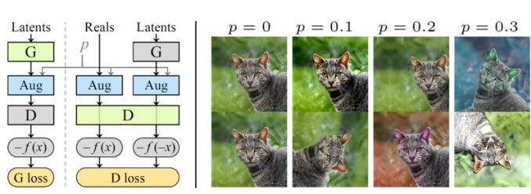
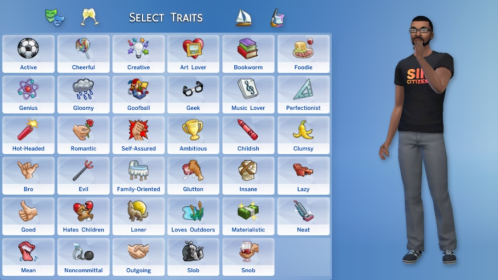

Posted on March 6, 2021 at 12:00 PM
When you first meet a person, you make assumptions based on their appearance, from very basic characteristics, such as their age or gender, to more advanced personality characteristics like their favourite colour, the car they might drive, a friend of yours who would be perfect for them. We can make assumptions about anything really. Just from one look at a person, we can imagine how they would act in certain situations or what their life has been like up to this point. This is what this project is really all about, testing how strong our human intuition really is.
The aim of this project is to build a detailed character sheet when given a photo of a random person. As to how we get the details, we survey many people and ask them for the attributes of the people we show them. From here, by employing machine learning algorithms, we can gauge a common answer and compare it to other images that received the same answer and find the similarities in the person’s features. For example, if a woman with red hair is shown and many people say her hair is “ginger”. Then another 100 people with red hair are shown and all receive the same answer of “ginger” hair. If we then show the computer a person with red hair, it should say that the person has “ginger” hair.
I got the chance to take on this project through a module at Queen’s University Belfast called “Computer Science Challenges”. The module gives first-year students the chance to try their hand at a final-year-style project. It’s been a great experience so far and a brilliant way to learn. The main aim of the module is to create something of lasting value. To help understand this project, I was given this description:
“People often make consistent superficial judgements of a strangers’ personality and life from their appearance. While these judgements can often be very inaccurate, the fact that many people can feel a similar way is interesting and can be used to reveal cultural bias and measure the limits of human intuition. The goal of this project is to create a realistic ‘character sheet’ as a JSON data structure that defines a person and their appearance in an image. By getting crowd workers to label fictional and real people we can analyse how people make judgements about others and how accurate and consistent such judgements can be.”
To start, I was given a few resources to research, one of which was WikiData, the largest collection of formalised data about people, places, things etc. I started learning how to query with the WikiData API and getting some useful information back. The formalised data about people and fictional characters proved very useful as test data when creating the JSON editor. The structure of the JSON files also helped in understanding the file format.
My next task was to run a web server which displays a form. To do this, I used Flask as it is easy to learn and debug. Flask is a micro web framework written in Python. A web framework is something that makes developing web applications easy, the micro part just refers to the minimalistic simplicity of the framework. The process of installing Flask was relatively simple using pip. In no time, I had “Hello World” on the web server. This meant I could get started on building the JSON editor. Flask allows you to get form feedback through the “Request” object which proved very useful in the Editor. Any problem or difficulty I had was fixed quickly by the user guide.
To edit the character sheet easier, I created a JSON editor which does what it says in the title basically. It is a web application written in Python which lets you read JSON file data and edit it. This will be of use later in the project when we want to change parts of our character sheet quick, or when we want to get feedback from surveys. Eventually we will be able to add in more complex UI features but at the moment, the web app is a working model.
To start creating the form, I used the load() function of the json library to get the JSON file as a dictionary. To parse the dictionary, I wrote a recursive method which identifies the instance of the current element of the JSON dict and calls the appropriate method which turns the element into HTML form code.
So far, the method can handle list, dict, str and int, each having the appropriate conversion method. Dictionaries and lists are separated by divs to separate them in the form. Strings and numbers are shown with labels and text boxes/areas. As we may be dealing with large amounts of data, we need to have distinct unique names for the HTML elements. This is where I employed a naming convention where the ID of elements was the path to the value in the dictionary e.g.:
Once the form was created, it needed to be displayed. This was done through Flask because it makes getting form feedback very easy.
To get feedback, I used the “request” object included in Flask. This gave me access to the form elements after hitting submit. I set the “methods” parameter of app to “[‘GET’,’POST’] . By doing this, the form could return information in either GET-mode or POST-mode (For more info). After having set all these parameters, “request.form” is passed as a parameter to the parse form method.
Since the request.form object had been passed as a parameter, the parse form method can now turn it back into JSON syntax. The instance of “request.form” is ImmutableMultiDict, which is a type of dictionary used in Python where mapping multiple values to a single key is possible. As it is a type of dictionary, each key can be retrieved. In the parse method, a new empty dictionary is created to hold the JSON data. Then it starts to iterate through each key in request.form, getting the ID, converting the ID to a path, and splitting the path into “pathParts”.

After this, a parent variable is created, and the value is the empty dictionary made earlier. This parent variable serves as the direct parent of the element the
iteration is currently parsing. From here, the method iterates through each “part” in “pathParts”, checking if it is the either the first, last or if the part is
already in the parent dictionary.
Something I have not yet implemented is type handling, e.g., different methods for converting date, money, etc. to HTML elements. This would allow the form to have a more attractive layout and gives the JSON file more detail. Adding type information for each value is considered good practice, a good way to do it is shown here:
Another student, Dean Mulholland, is also working on this project. His focus was on StyleGAN2-ada. In his work so far, he has been able to use StyleGAN2-ada to generate an image of something based on a dataset of examples and a pretrained network. The technology is very interesting, and you can find more about it here[insert link to Dean’s blog post]. In the project, the end goal is to use it to analyse an image of a person and return the character with all values filled. It will be able to look at someone and hopefully return accurate descriptions of their personality.
As we want to make predictions about many things about people, we will have to store them in a file. There are many ways we can formalise data such as grouping together visible traits like hair colour, eye colour, hair style and grouping invisible traits like personality, net worth, their favourite food. As we can formalise anything, the characteristics we choose are important. If our aim is to make predictions about people and the actions they would make, we should formalise the data we can get the most analysis value out of.
In regard to personality traits, the sheer number of possible formalisations is insane. For instance, take The Sims 4, pictured above, they allow a player to choose their character’s traits thus leading to a specific path of life. If we can find similarities in people’s personality and their career, romantic life, etc. we can find the defining factors of a person’s character which lead them down a specific path of life. This can be shown in our character sheet and I, for one, am very excited to see the results of this.
To gather our data for recognising characteristics, we will use Amazon Mechanical Turk which is a crowdsourcing website which uses humans to perform tasks that computers cannot. To gather reliable data, we will have to get quite a lot of data ranging from asking participants to rate a person’s personality traits, whether they think the person is more introverted than extroverted, what career industry they might work in, what car they might drive. The survey will take the form of a web application where, given an image of a person, the user can speculate the values of this person’s character.
Once we have sufficient values so that we can have an educated guess at a person’s characteristics, given their face, and we can do this for enough images of people, we can use the StyleGAN2-ada code to convert the image to a form where we can build machine learning models to predict how people infer characteristics about a person from their appearance. An example being the connection between what they assume of the person’s personality and what industry they work in. We can also work off derived values, these being values we get from primary values like hairstyle, hair colour and making the link between those and a person’s music taste. With the amount of ways we can describe and formalise a person, the possibilities with where we can take this project are endless .
To continue this project, you will need:
Some helpful links which you may find useful: